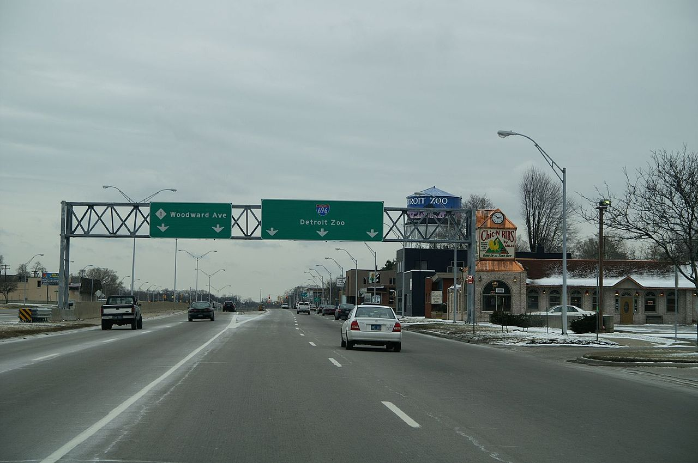
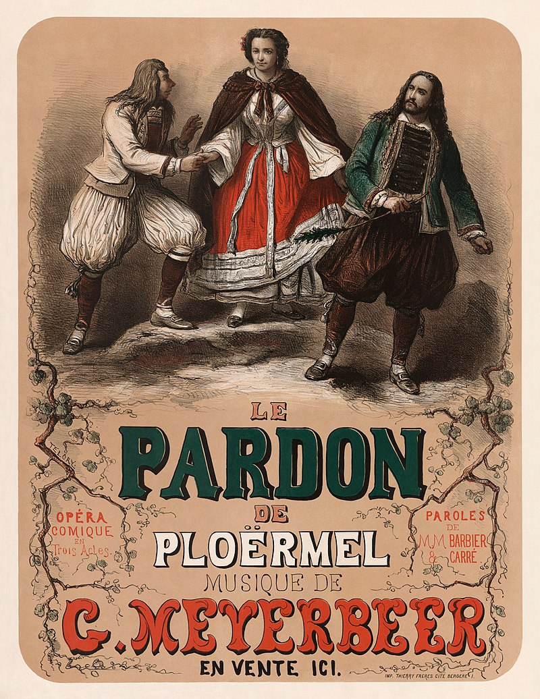

From today's featured article

M-1 is a north–south state trunkline highway in the Metro Detroit area of the US state of Michigan. The highway runs from Detroit north-northwesterly to Pontiac. The Federal Highway Administration has listed it as the Automotive Heritage Trail, an All-American Road in the National Scenic Byways Program.
Did you Know..
- ... that after the Paralympics, Gambian athlete Isatou Nyang (pictured) continued to train at night.
- ... that "Nun saget Dank und lobt den Herren", a 16th-century German hymn based on Psalm 118.
In the News
- Former President of Algeria Abdelaziz Bouteflika (pictured) dies at the age of 84.
- The United States, United Kingdom and Australia sign a security pact that will provide Australia with nuclear submarines.
On this Day
September 19: Battle of Britain Day in Canada (2021); International Talk Like a Pirate Day
Today's featured picture

Giacomo Meyerbeer (1791–1864) was a German opera composer. Born to a wealthy Berlin family, he began his musical career as a pianist but soon decided to devote himself to opera.
Other areas of wikipedia
- Community portal – Bulletin board, projects, resources and activities covering a wide range of Wikipedia areas.
- Help desk – Ask questions about using Wikipedia.
- Reference desk – Serving as virtual librarians, Wikipedia volunteers tackle your questions on a wide range of subjects.
- Site news – Announcements, updates, articles and press releases on Wikipedia and the Wikimedia Foundation.
Wikipedia's sister projects
Wikipedia is hosted by the Wikipedia Foundation a non-profit organization that also hosts a range of other projects:
Commons
Wikiquote
Meta-Wiki
Wikivoyage
Wikipedia Languages
This Wikipedia is written in English. Many other Wikipedias are available some of the largest are listed below. 1,000,000+ articles العربيةDeutschEspañolFrançaisItalianoNederlands日本語PolskiPortuguêsРусскийSvenskaУкраїнськаTiếng Việt中文